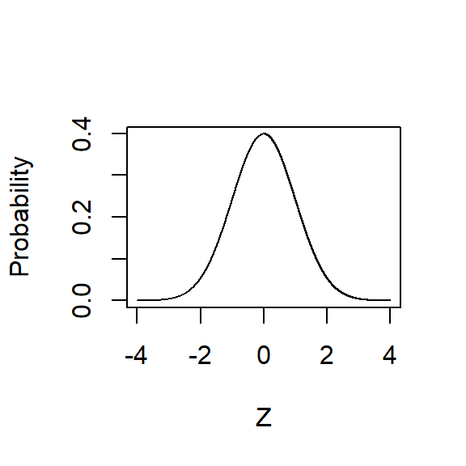

Probability
Probability is a mathematical concept used to predict how likely an event is to occur by assigning a number to represent whether something is definitely going to happen, definitely not going to happen, or anywhere in between. Although there are a lot of complicated things we can do with probability, the equation is simply the ratio of outcomes of interest to total outcomes and ranges from 0 (definitely won’t happen) to 1 (definitely will happen).
Although most of the concepts of probability are fairly simple, they acan be counterintuitive. Take for example the following question.
Forewarning: I will try to trick you.
Let’s say you have just met with your doctor who has informed you that you have tested positive for a fatal disease. To make things worse, this test is accurate 95% of the time.
- What is the probability you will die from this disease?

This question makes use of the base rate fallacy, which occurs when someone misjudges the likelihood of an event because they don’t take into account other relevant information. In this case, the relevant information is how infrequently the disease occurs in the population. Let’s take a look at Table 1 Below:
|
Actually Sick |
Actually Healthy |
Probability of Having the Disease |
| Test Positive |
95 |
4,995 |
1.90% |
| Test Nagative |
5 |
94,905 |
0.01% |
The columns labeled “Actually Sick” and “Actually Healthy” represent the number of people out of 100,000 that either really do have this fake illness or do not, respectively. The rows marked “Test Positive” and “Test Negative” indicate the number of people out of that 100,000 whose test told them they had the disease or not, respectively. In other words, the columns tell us about reality and the rows tell us about the test.
As you can see, 5 people who actually have the disease got test results that told them they were healthy, and 4,995 people who are healthy were told that they actually have the disease. If you add those groups up, you will find that 5% of the total number of people who took the test received wrong results (\(\frac{5,000}{100,000}\)). The test makers were not being inaccurate when they told you that their test was correct 95% of the time, they just failed to mention that the overwhelming majority of wrong tests happen when somebody who is actually healthy receives a test result that tells them they will die. Therefore, if you received those test results, you actually only have about a 1.90% chance of actually having the disease.
In order to know the probability of whatever it is you are interested in, you have to know the total number of possible outcomes (\(\frac{Outcome-of-Interest}{Total-Number-of-Possible-Outcomes}\)). Sometimes figuring that out is easy. For example, the probability of rolling a 1 on a single role of a six-sided die is \(\frac{1}{6}\) because there are 6 total possible outcomes. In the above example, the total number was 100,000 people. When I go over error later in this post, I will show tricks that statisticians have learned to essentially guess the total number of outcomes based on only knowing the details about a sample.
What happens if the thing we’re trying to predict is not a discrete outcome, like whether somebody is sick or not, and instead is continuous, like how many hours a consultant might bill next week based off their billing for the last month? The general equation for probability remains the same here, but now we look at area instead of counts.
Look at the graph below. There are many names for this distribution, but the two most common are the Normal Distribution and the Gaussian Distribution. I will use both terms interchangeably.

A lot of natural phenomena are normally distributed, like height and IQ. That’s pretty great because the normal distribution has a number of features that make things a bit easier when estimating probabilities and relationships, but those features are a bit out of the scope of this tutorial.
Because the normal distribution makes things a bit easier on estimating probabilities, statisticians, data scientists, and researchers often assume that an unknown distribution is normally distributed. Note: Good statisticians, data scientists, and researchers will always check those assumptions.
One of those benefits is that the normal distribution is precisely defined by an equation. As a consequence, you can define the probability of something by identifying the area of the normal distribution that corresponds to what you’re interested and divide that area by the total area. Ok, there’s a lot in this, so let’s step back and go over it slowly.
Let’s take a look at the normal distribution again, but this time I want you to notice the labels on the x- and y-axes.

Along the Y-axis is plotted the proportion of the distribution that has that value. In other words, the taller that part of the curve, the more likely is that value. It’s clear, then, that if you have no other information about a distribution than its mean and that it’s normally distributed, your best guess is the mean of the distribution.
Along the X-axis, you’ll notice that it’s centered at 0 and goes from -4 to +4, and the axis is labeled “Z.” I’ve generated what’s called a “z-curve,” which is a way to standardize values from different distributions. It’s not necessary to fully understand what this means, but a quick example might help.
Imagine you want to see whether men are paid more than women in your organization for different types of employees (e.g., C-suite and customer-facing). Obviously, these two types of employees have very different salary expectations, so how would you compare the pay of C-suite with the pay of your cashiers? A “z-score” is a common way to place values from different distributions on a common scale.

Although the details are unnecessary for these purposes, it is important to know that there are specific probabilities associated with each z-score. For example, between the average of a distribution and +/-1 z-score is about 68% of the distribution. Between the average and +/- 2 z-scores is about 95% of the distribution.
Now, back to the question at hand. If we know that the area between +1 and -1 z-score is ~68% of the distribution, then we know that the area outside +1 and -1 z-score is ~32% of the population (100% - 68% = 32%). Because that area is on both sides of the curve, then there’s ~16% of the distribution that is greater than +1 z-score and ~16% of the distribution that is less than -1 z-score. That means we can convert the pay of all of our employees into z-scores and look at whether men are disproportionally represented in the top of the distribution across all positions (Spoiler: They probably are, and that’s a problem).
In fact, by converting your raw scores to z-scores, you can start to estimate the probability of randomly drawing a value that’s “greater than X,” or “between X and Z.” That is how you estimate probabilities when you are dealing with continuous values and not counts. And you thought you’d never have to think about area problems again!
LS0tDQp0aXRsZTogIlByb2JhYmlsaXR5LCBPZGRzLCBhbmQgRXJyb3IiDQpvdXRwdXQ6DQogIGh0bWxfZG9jdW1lbnQ6DQogICAgY29kZV9kb3dubG9hZDogeWVzDQogICAgZm9udHNpemU6IDhwdA0KICAgIGhpZ2hsaWdodDogdGV4dG1hdGUNCiAgICBudW1iZXJfc2VjdGlvbnM6IG5vDQogICAgdGhlbWU6IGNvc21vDQotLS0NCjxici8+PGJyLz4NCg0KDQpgYGB7ciwgZWNobyA9IEZBTFNFLCBvdXQuaGVpZ2h0ID0gJzEzMCUnLCBvdXQud2lkdGggPSAnMTMwJScsIGZpZy5hbGlnbiA9ICdjZW50ZXInfQ0Ka25pdHI6OmluY2x1ZGVfZ3JhcGhpY3MoIkM6L1VzZXJzL3RjYXJzZTIvRG9jdW1lbnRzL0dpdEh1Yi9UaW1fQ2Fyc2VsLmdpdGh1Yi5pby9kaWNlLmpwZyIpDQpgYGANCjxici8+PGJyLz4NCg0KPGNlbnRlcj4NCiMgVU5ERVIgQ09OU1RSVUNUSU9ODQo8L2NlbnRlcj4NCg0KIyBQcm9iYWJpbGl0eQ0KUHJvYmFiaWxpdHkgaXMgYSBtYXRoZW1hdGljYWwgY29uY2VwdCB1c2VkIHRvIHByZWRpY3QgaG93IGxpa2VseSBhbiBldmVudCBpcyB0byBvY2N1ciBieSBhc3NpZ25pbmcgYSBudW1iZXIgdG8gcmVwcmVzZW50IHdoZXRoZXIgc29tZXRoaW5nIGlzIGRlZmluaXRlbHkgZ29pbmcgdG8gaGFwcGVuLCBkZWZpbml0ZWx5IG5vdCBnb2luZyB0byBoYXBwZW4sIG9yIGFueXdoZXJlIGluIGJldHdlZW4uIEFsdGhvdWdoIHRoZXJlIGFyZSBhIGxvdCBvZiBjb21wbGljYXRlZCB0aGluZ3Mgd2UgY2FuIGRvIHdpdGggcHJvYmFiaWxpdHksIHRoZSBlcXVhdGlvbiBpcyBzaW1wbHkgdGhlIHJhdGlvIG9mIG91dGNvbWVzIG9mIGludGVyZXN0IHRvIHRvdGFsIG91dGNvbWVzIGFuZCByYW5nZXMgZnJvbSAwIChkZWZpbml0ZWx5IHdvbuKAmXQgaGFwcGVuKSB0byAxIChkZWZpbml0ZWx5IHdpbGwgaGFwcGVuKS4NCg0KQWx0aG91Z2ggbW9zdCBvZiB0aGUgY29uY2VwdHMgb2YgcHJvYmFiaWxpdHkgYXJlIGZhaXJseSBzaW1wbGUsIHRoZXkgYWNhbiBiZSBjb3VudGVyaW50dWl0aXZlLiBUYWtlIGZvciBleGFtcGxlIHRoZSBmb2xsb3dpbmcgcXVlc3Rpb24uIA0KDQoqKkZvcmV3YXJuaW5nOioqIEkgd2lsbCB0cnkgdG8gdHJpY2sgeW91Lg0KPGJyLz48YnIvPg0KDQoNCkxldOKAmXMgc2F5IHlvdSBoYXZlIGp1c3QgbWV0IHdpdGggeW91ciBkb2N0b3Igd2hvIGhhcyBpbmZvcm1lZCB5b3UgdGhhdCB5b3UgaGF2ZSB0ZXN0ZWQgcG9zaXRpdmUgZm9yIGEgZmF0YWwgZGlzZWFzZS4gIFRvIG1ha2UgdGhpbmdzIHdvcnNlLCB0aGlzIHRlc3QgaXMgYWNjdXJhdGUgOTUlIG9mIHRoZSB0aW1lLiANCg0KLQlXaGF0IGlzIHRoZSBwcm9iYWJpbGl0eSB5b3Ugd2lsbCBkaWUgZnJvbSB0aGlzIGRpc2Vhc2U/DQoNCmBgYHtyLCBlY2hvID0gRkFMU0UsIG91dC5oZWlnaHQgPSAnNTAlJywgb3V0LndpZHRoID0gJzUwJScsIGZpZy5hbGlnbiA9ICdjZW50ZXInfQ0Ka25pdHI6OmluY2x1ZGVfZ3JhcGhpY3MoIkM6L1VzZXJzL3RjYXJzZTIvRG9jdW1lbnRzL0dpdEh1Yi9UaW1fQ2Fyc2VsLmdpdGh1Yi5pby9tZWRpY2FsLXRlc3QuanBnIikNCmBgYA0KPGJyLz48YnIvPg0KDQpUaGlzIHF1ZXN0aW9uIG1ha2VzIHVzZSBvZiB0aGUgYmFzZSByYXRlIGZhbGxhY3ksIHdoaWNoIG9jY3VycyB3aGVuIHNvbWVvbmUgbWlzanVkZ2VzIHRoZSBsaWtlbGlob29kIG9mIGFuIGV2ZW50IGJlY2F1c2UgdGhleSBkb27igJl0IHRha2UgaW50byBhY2NvdW50IG90aGVyIHJlbGV2YW50IGluZm9ybWF0aW9uLiBJbiB0aGlzIGNhc2UsIHRoZSByZWxldmFudCBpbmZvcm1hdGlvbiBpcyAqaG93IGluZnJlcXVlbnRseSB0aGUgZGlzZWFzZSBvY2N1cnMgaW4gdGhlIHBvcHVsYXRpb24qLiBMZXTigJlzIHRha2UgYSBsb29rIGF0IFRhYmxlIDEgQmVsb3c6DQoNCnwgICAgICAgICAgICAgfCAgICAgICAgICAgICAgfFRhYmxlIDEgICAgICAgIHwgICAgICAgICAgICAgICAgICAgICAgICAgICAgICAgICB8DQp8Oi0tLS0tOiAgICAgIHw6LS0tLS06ICAgICAgIHw6LS0tLS06ICAgICAgICB8Oi0tLS0tOiAgICAgICAgICAgICAgICAgICAgICAgICAgfA0KfCAgICAgICAgICAgICB8QWN0dWFsbHkgU2lja3xBY3R1YWxseSBIZWFsdGh5fFByb2JhYmlsaXR5IG9mIEhhdmluZyB0aGUgRGlzZWFzZXwNCnxUZXN0IFBvc2l0aXZlfDk1ICAgICAgICAgICB8NCw5OTUgICAgICAgICAgIHwxLjkwJSAgICAgICAgICAgICAgICAgICAgICAgICAgICB8DQp8VGVzdCBOYWdhdGl2ZXw1ICAgICAgICAgICAgfDk0LDkwNSAgICAgICAgICB8MC4wMSUgICAgICAgICAgICAgICAgICAgICAgICAgICAgfA0KDQpUaGUgY29sdW1ucyBsYWJlbGVkIOKAnEFjdHVhbGx5IFNpY2vigJ0gYW5kIOKAnEFjdHVhbGx5IEhlYWx0aHnigJ0gcmVwcmVzZW50IHRoZSBudW1iZXIgb2YgcGVvcGxlIG91dCBvZiAxMDAsMDAwIHRoYXQgZWl0aGVyIHJlYWxseSBkbyBoYXZlIHRoaXMgZmFrZSBpbGxuZXNzIG9yIGRvIG5vdCwgcmVzcGVjdGl2ZWx5LiBUaGUgcm93cyBtYXJrZWQg4oCcVGVzdCBQb3NpdGl2ZeKAnSBhbmQg4oCcVGVzdCBOZWdhdGl2ZeKAnSBpbmRpY2F0ZSB0aGUgbnVtYmVyIG9mIHBlb3BsZSBvdXQgb2YgdGhhdCAxMDAsMDAwIHdob3NlIHRlc3QgdG9sZCB0aGVtIHRoZXkgaGFkIHRoZSBkaXNlYXNlIG9yIG5vdCwgcmVzcGVjdGl2ZWx5LiBJbiBvdGhlciB3b3JkcywgdGhlIGNvbHVtbnMgdGVsbCB1cyBhYm91dCByZWFsaXR5IGFuZCB0aGUgcm93cyB0ZWxsIHVzIGFib3V0IHRoZSB0ZXN0LiANCjxici8+PGJyLz4NCg0KDQpBcyB5b3UgY2FuIHNlZSwgNSBwZW9wbGUgd2hvIGFjdHVhbGx5IGhhdmUgdGhlIGRpc2Vhc2UgZ290IHRlc3QgcmVzdWx0cyB0aGF0IHRvbGQgdGhlbSB0aGV5IHdlcmUgaGVhbHRoeSwgYW5kIDQsOTk1IHBlb3BsZSB3aG8gYXJlIGhlYWx0aHkgd2VyZSB0b2xkIHRoYXQgdGhleSBhY3R1YWxseSBoYXZlIHRoZSBkaXNlYXNlLiBJZiB5b3UgYWRkIHRob3NlIGdyb3VwcyB1cCwgeW91IHdpbGwgZmluZCB0aGF0IDUlIG9mIHRoZSB0b3RhbCBudW1iZXIgb2YgcGVvcGxlIHdobyB0b29rIHRoZSB0ZXN0IHJlY2VpdmVkIHdyb25nIHJlc3VsdHMgKCRcZnJhY3s1LDAwMH17MTAwLDAwMH0kKS4gVGhlIHRlc3QgbWFrZXJzIHdlcmUgbm90IGJlaW5nIGluYWNjdXJhdGUgd2hlbiB0aGV5IHRvbGQgeW91IHRoYXQgdGhlaXIgdGVzdCB3YXMgY29ycmVjdCA5NSUgb2YgdGhlIHRpbWUsIHRoZXkganVzdCBmYWlsZWQgdG8gbWVudGlvbiB0aGF0IHRoZSBvdmVyd2hlbG1pbmcgbWFqb3JpdHkgb2Ygd3JvbmcgdGVzdHMgaGFwcGVuIHdoZW4gc29tZWJvZHkgd2hvIGlzIGFjdHVhbGx5IGhlYWx0aHkgcmVjZWl2ZXMgYSB0ZXN0IHJlc3VsdCB0aGF0IHRlbGxzIHRoZW0gdGhleSB3aWxsIGRpZS4gVGhlcmVmb3JlLCBpZiB5b3UgcmVjZWl2ZWQgdGhvc2UgdGVzdCByZXN1bHRzLCB5b3UgYWN0dWFsbHkgb25seSBoYXZlIGFib3V0IGEgMS45MCUgY2hhbmNlIG9mIGFjdHVhbGx5IGhhdmluZyB0aGUgZGlzZWFzZS4NCg0KSW4gb3JkZXIgdG8ga25vdyB0aGUgcHJvYmFiaWxpdHkgb2Ygd2hhdGV2ZXIgaXQgaXMgeW91IGFyZSBpbnRlcmVzdGVkIGluLCB5b3UgaGF2ZSB0byBrbm93IHRoZSB0b3RhbCBudW1iZXIgb2YgcG9zc2libGUgb3V0Y29tZXMgKCRcZnJhY3tPdXRjb21lLW9mLUludGVyZXN0fXtUb3RhbC1OdW1iZXItb2YtUG9zc2libGUtT3V0Y29tZXN9JCkuIFNvbWV0aW1lcyBmaWd1cmluZyB0aGF0IG91dCBpcyBlYXN5LiBGb3IgZXhhbXBsZSwgdGhlIHByb2JhYmlsaXR5IG9mIHJvbGxpbmcgYSBgMWAgb24gYSBzaW5nbGUgcm9sZSBvZiBhIHNpeC1zaWRlZCBkaWUgaXMgJFxmcmFjezF9ezZ9JCBiZWNhdXNlIHRoZXJlIGFyZSA2IHRvdGFsIHBvc3NpYmxlIG91dGNvbWVzLiBJbiB0aGUgYWJvdmUgZXhhbXBsZSwgdGhlIHRvdGFsIG51bWJlciB3YXMgMTAwLDAwMCBwZW9wbGUuIFdoZW4gSSBnbyBvdmVyIGVycm9yIGxhdGVyIGluIHRoaXMgcG9zdCwgSSB3aWxsIHNob3cgdHJpY2tzIHRoYXQgc3RhdGlzdGljaWFucyBoYXZlIGxlYXJuZWQgdG8gZXNzZW50aWFsbHkgZ3Vlc3MgdGhlIHRvdGFsIG51bWJlciBvZiBvdXRjb21lcyBiYXNlZCBvbiBvbmx5IGtub3dpbmcgdGhlIGRldGFpbHMgYWJvdXQgYSBzYW1wbGUuDQoNCldoYXQgaGFwcGVucyBpZiB0aGUgdGhpbmcgd2XigJlyZSB0cnlpbmcgdG8gcHJlZGljdCBpcyBub3QgYSBkaXNjcmV0ZSBvdXRjb21lLCBsaWtlIHdoZXRoZXIgc29tZWJvZHkgaXMgc2ljayBvciBub3QsIGFuZCBpbnN0ZWFkIGlzIGNvbnRpbnVvdXMsIGxpa2UgaG93IG1hbnkgaG91cnMgYSBjb25zdWx0YW50IG1pZ2h0IGJpbGwgbmV4dCB3ZWVrIGJhc2VkIG9mZiB0aGVpciBiaWxsaW5nIGZvciB0aGUgbGFzdCBtb250aD8gVGhlIGdlbmVyYWwgZXF1YXRpb24gZm9yIHByb2JhYmlsaXR5IHJlbWFpbnMgdGhlIHNhbWUgaGVyZSwgYnV0IG5vdyB3ZSBsb29rIGF0ICoqYXJlYSoqIGluc3RlYWQgb2YgKipjb3VudHMuKioNCg0KTG9vayBhdCB0aGUgZ3JhcGggYmVsb3cuIFRoZXJlIGFyZSBtYW55IG5hbWVzIGZvciB0aGlzIGRpc3RyaWJ1dGlvbiwgYnV0IHRoZSB0d28gbW9zdCBjb21tb24gYXJlIHRoZSBOb3JtYWwgRGlzdHJpYnV0aW9uIGFuZCB0aGUgR2F1c3NpYW4gRGlzdHJpYnV0aW9uLiBJIHdpbGwgdXNlIGJvdGggdGVybXMgaW50ZXJjaGFuZ2VhYmx5Lg0KDQpgYGB7ciwgZWNobyA9IEZBTFNFLCBvdXQud2lkdGggPScuNDlcXGxpbmV3aWR0aCcsIGZpZy53aWR0aCA9IDMsIGZpZy5oZWlnaHQgPSAzLCBmaWcuc2hvdyA9ICdob2xkJywgZmlnLmFsaWduID0gJ2NlbnRlcid9DQpaIDwtIHNlcSgtNCwgKzQsIGxlbmd0aD0xMDAwMCkNClByb2JhYmlsaXR5IDwtIGRub3JtKFosIG1lYW4gPSAwLCBzZCA9IDEpDQpwbG90KFosIFByb2JhYmlsaXR5LCB0eXBlPSJsIiwgbHdkID0gMSkNCmBgYA0KDQpBIGxvdCBvZiBuYXR1cmFsIHBoZW5vbWVuYSBhcmUgbm9ybWFsbHkgZGlzdHJpYnV0ZWQsIGxpa2UgaGVpZ2h0IGFuZCBJUS4gVGhhdOKAmXMgcHJldHR5IGdyZWF0IGJlY2F1c2UgdGhlIG5vcm1hbCBkaXN0cmlidXRpb24gaGFzIGEgbnVtYmVyIG9mIGZlYXR1cmVzIHRoYXQgbWFrZSB0aGluZ3MgYSBiaXQgZWFzaWVyIHdoZW4gZXN0aW1hdGluZyBwcm9iYWJpbGl0aWVzIGFuZCByZWxhdGlvbnNoaXBzLCBidXQgdGhvc2UgZmVhdHVyZXMgYXJlIGEgYml0IG91dCBvZiB0aGUgc2NvcGUgb2YgdGhpcyB0dXRvcmlhbC4NCg0KQmVjYXVzZSB0aGUgbm9ybWFsIGRpc3RyaWJ1dGlvbiBtYWtlcyB0aGluZ3MgYSBiaXQgZWFzaWVyIG9uIGVzdGltYXRpbmcgcHJvYmFiaWxpdGllcywgc3RhdGlzdGljaWFucywgZGF0YSBzY2llbnRpc3RzLCBhbmQgcmVzZWFyY2hlcnMgb2Z0ZW4gYXNzdW1lIHRoYXQgYW4gdW5rbm93biBkaXN0cmlidXRpb24gaXMgbm9ybWFsbHkgZGlzdHJpYnV0ZWQuICoqTm90ZToqKiBHb29kIHN0YXRpc3RpY2lhbnMsIGRhdGEgc2NpZW50aXN0cywgYW5kIHJlc2VhcmNoZXJzIHdpbGwgYWx3YXlzIGNoZWNrIHRob3NlIGFzc3VtcHRpb25zLiANCg0KT25lIG9mIHRob3NlIGJlbmVmaXRzIGlzIHRoYXQgdGhlIG5vcm1hbCBkaXN0cmlidXRpb24gaXMgcHJlY2lzZWx5IGRlZmluZWQgYnkgYW4gZXF1YXRpb24uIEFzIGEgY29uc2VxdWVuY2UsIHlvdSBjYW4gZGVmaW5lIHRoZSBwcm9iYWJpbGl0eSBvZiBzb21ldGhpbmcgYnkgaWRlbnRpZnlpbmcgdGhlIGFyZWEgb2YgdGhlIG5vcm1hbCBkaXN0cmlidXRpb24gdGhhdCBjb3JyZXNwb25kcyB0byB3aGF0IHlvdeKAmXJlIGludGVyZXN0ZWQgYW5kIGRpdmlkZSB0aGF0IGFyZWEgYnkgdGhlIHRvdGFsIGFyZWEuIE9rLCB0aGVyZeKAmXMgYSBsb3QgaW4gdGhpcywgc28gbGV04oCZcyBzdGVwIGJhY2sgYW5kIGdvIG92ZXIgaXQgc2xvd2x5Lg0KDQpMZXQncyB0YWtlIGEgbG9vayBhdCB0aGUgbm9ybWFsIGRpc3RyaWJ1dGlvbiBhZ2FpbiwgYnV0IHRoaXMgdGltZSBJIHdhbnQgeW91IHRvIG5vdGljZSB0aGUgbGFiZWxzIG9uIHRoZSB4LSBhbmQgeS1heGVzLg0KDQpgYGB7ciwgZWNobyA9IEZBTFNFLCBvdXQud2lkdGggPScuNDlcXGxpbmV3aWR0aCcsIGZpZy53aWR0aCA9IDMsIGZpZy5oZWlnaHQgPSAzLCBmaWcuc2hvdyA9ICdob2xkJywgZmlnLmFsaWduID0gJ2NlbnRlcid9DQpaIDwtIHNlcSgtNCwgKzQsIGxlbmd0aD0xMDAwMCkNClByb2JhYmlsaXR5IDwtIGRub3JtKFosIG1lYW4gPSAwLCBzZCA9IDEpDQpwbG90KFosIFByb2JhYmlsaXR5LCB0eXBlPSJsIiwgbHdkID0gMSkNCmBgYA0KDQpBbG9uZyB0aGUgWS1heGlzIGlzIHBsb3R0ZWQgdGhlIHByb3BvcnRpb24gb2YgdGhlIGRpc3RyaWJ1dGlvbiB0aGF0IGhhcyB0aGF0IHZhbHVlLiBJbiBvdGhlciB3b3JkcywgdGhlIHRhbGxlciB0aGF0IHBhcnQgb2YgdGhlIGN1cnZlLCB0aGUgbW9yZSBsaWtlbHkgaXMgdGhhdCB2YWx1ZS4gSXTigJlzIGNsZWFyLCB0aGVuLCB0aGF0IGlmIHlvdSBoYXZlIG5vIG90aGVyIGluZm9ybWF0aW9uIGFib3V0IGEgZGlzdHJpYnV0aW9uIHRoYW4gaXRzIG1lYW4gYW5kIHRoYXQgaXTigJlzIG5vcm1hbGx5IGRpc3RyaWJ1dGVkLCB5b3VyIGJlc3QgZ3Vlc3MgaXMgdGhlIG1lYW4gb2YgdGhlIGRpc3RyaWJ1dGlvbi4NCg0KQWxvbmcgdGhlIFgtYXhpcywgeW91J2xsIG5vdGljZSB0aGF0IGl0J3MgY2VudGVyZWQgYXQgMCBhbmQgZ29lcyBmcm9tIC00IHRvICs0LCBhbmQgdGhlIGF4aXMgaXMgbGFiZWxlZCAiWi4iIEkndmUgZ2VuZXJhdGVkIHdoYXQncyBjYWxsZWQgYSAiei1jdXJ2ZSwiIHdoaWNoIGlzIGEgd2F5IHRvIHN0YW5kYXJkaXplIHZhbHVlcyBmcm9tIGRpZmZlcmVudCBkaXN0cmlidXRpb25zLiBJdOKAmXMgbm90IG5lY2Vzc2FyeSB0byBmdWxseSB1bmRlcnN0YW5kIHdoYXQgdGhpcyBtZWFucywgYnV0IGEgcXVpY2sgZXhhbXBsZSBtaWdodCBoZWxwLg0KDQpJbWFnaW5lIHlvdSB3YW50IHRvIHNlZSB3aGV0aGVyIG1lbiBhcmUgcGFpZCBtb3JlIHRoYW4gd29tZW4gaW4geW91ciBvcmdhbml6YXRpb24gZm9yIGRpZmZlcmVudCB0eXBlcyBvZiBlbXBsb3llZXMgKGUuZy4sIEMtc3VpdGUgYW5kIGN1c3RvbWVyLWZhY2luZykuIE9idmlvdXNseSwgdGhlc2UgdHdvIHR5cGVzIG9mIGVtcGxveWVlcyBoYXZlIHZlcnkgZGlmZmVyZW50IHNhbGFyeSBleHBlY3RhdGlvbnMsIHNvIGhvdyB3b3VsZCB5b3UgY29tcGFyZSB0aGUgcGF5IG9mIEMtc3VpdGUgd2l0aCB0aGUgcGF5IG9mIHlvdXIgY2FzaGllcnM/IEEg4oCcei1zY29yZeKAnSBpcyBhIGNvbW1vbiB3YXkgdG8gcGxhY2UgdmFsdWVzIGZyb20gZGlmZmVyZW50IGRpc3RyaWJ1dGlvbnMgb24gYSBjb21tb24gc2NhbGUuIA0KDQpgYGB7ciwgZWNobyA9IEZBTFNFLCBvdXQuaGVpZ2h0ID0gJzUwJScsIG91dC53aWR0aCA9ICc1MCUnLCBmaWcuYWxpZ24gPSAnY2VudGVyJ30NCmtuaXRyOjppbmNsdWRlX2dyYXBoaWNzKCJDOi9Vc2Vycy90Y2Fyc2UyL0RvY3VtZW50cy9HaXRIdWIvVGltX0NhcnNlbC5naXRodWIuaW8vbW9uZXkuanBnIikNCmBgYA0KDQpBbHRob3VnaCB0aGUgZGV0YWlscyBhcmUgdW5uZWNlc3NhcnkgZm9yIHRoZXNlIHB1cnBvc2VzLCBpdCBpcyBpbXBvcnRhbnQgdG8ga25vdyB0aGF0IHRoZXJlIGFyZSBzcGVjaWZpYyBwcm9iYWJpbGl0aWVzIGFzc29jaWF0ZWQgd2l0aCBlYWNoIHotc2NvcmUuIEZvciBleGFtcGxlLCBiZXR3ZWVuIHRoZSBhdmVyYWdlIG9mIGEgZGlzdHJpYnV0aW9uIGFuZCArLy0xIHotc2NvcmUgaXMgYWJvdXQgNjglIG9mIHRoZSBkaXN0cmlidXRpb24uIEJldHdlZW4gdGhlIGF2ZXJhZ2UgYW5kICsvLSAyIHotc2NvcmVzIGlzIGFib3V0IDk1JSBvZiB0aGUgZGlzdHJpYnV0aW9uLiANCg0KTm93LCBiYWNrIHRvIHRoZSBxdWVzdGlvbiBhdCBoYW5kLiBJZiB3ZSBrbm93IHRoYXQgdGhlIGFyZWEgYmV0d2VlbiArMSBhbmQgLTEgei1zY29yZSBpcyB+NjglIG9mIHRoZSBkaXN0cmlidXRpb24sIHRoZW4gd2Uga25vdyB0aGF0IHRoZSBhcmVhIG91dHNpZGUgKzEgYW5kIC0xIHotc2NvcmUgaXMgfjMyJSBvZiB0aGUgcG9wdWxhdGlvbiAoMTAwJSAtIDY4JSA9IDMyJSkuIEJlY2F1c2UgdGhhdCBhcmVhIGlzIG9uIGJvdGggc2lkZXMgb2YgdGhlIGN1cnZlLCB0aGVuIHRoZXJl4oCZcyB+MTYlIG9mIHRoZSBkaXN0cmlidXRpb24gdGhhdCBpcyBncmVhdGVyIHRoYW4gKzEgei1zY29yZSBhbmQgfjE2JSBvZiB0aGUgZGlzdHJpYnV0aW9uIHRoYXQgaXMgbGVzcyB0aGFuIC0xIHotc2NvcmUuIFRoYXQgbWVhbnMgd2UgY2FuIGNvbnZlcnQgdGhlIHBheSBvZiBhbGwgb2Ygb3VyIGVtcGxveWVlcyBpbnRvIHotc2NvcmVzIGFuZCBsb29rIGF0IHdoZXRoZXIgbWVuIGFyZSBkaXNwcm9wb3J0aW9uYWxseSByZXByZXNlbnRlZCBpbiB0aGUgdG9wIG9mIHRoZSBkaXN0cmlidXRpb24gYWNyb3NzIGFsbCBwb3NpdGlvbnMgKCpTcG9pbGVyOiogVGhleSBwcm9iYWJseSBhcmUsIGFuZCB0aGF04oCZcyBhIHByb2JsZW0pLiANCg0KSW4gZmFjdCwgYnkgY29udmVydGluZyB5b3VyIHJhdyBzY29yZXMgdG8gei1zY29yZXMsIHlvdSBjYW4gc3RhcnQgdG8gZXN0aW1hdGUgdGhlIHByb2JhYmlsaXR5IG9mIHJhbmRvbWx5IGRyYXdpbmcgYSB2YWx1ZSB0aGF04oCZcyDigJxncmVhdGVyIHRoYW4gWCzigJ0gb3Ig4oCcYmV0d2VlbiBYIGFuZCBaLuKAnSAqVGhhdCogaXMgaG93IHlvdSBlc3RpbWF0ZSBwcm9iYWJpbGl0aWVzIHdoZW4geW91IGFyZSBkZWFsaW5nIHdpdGggY29udGludW91cyB2YWx1ZXMgYW5kIG5vdCBjb3VudHMuIEFuZCB5b3UgdGhvdWdodCB5b3XigJlkIG5ldmVyIGhhdmUgdG8gdGhpbmsgYWJvdXQgYXJlYSBwcm9ibGVtcyBhZ2FpbiENCjxici8+PGJyLz4NCg0KIyBPZGRzDQpBcyB3ZSBqdXN0IGRpc2N1c3NlZCwgcHJvYmFiaWxpdHkgaXMgdGhlIHJhdGlvIG9mICgkXGZyYWN7T3V0Y29tZS1vZi1JbnRlcmVzdH17VG90YWwtTnVtYmVyLW9mLVBvc3NpYmxlLU91dGNvbWVzfSQpLiBTbyBpZiB3ZSB3YW50ZWQgdG8ga25vdyB0aGUgcHJvYmFiaWxpdHkgb2Ygcm9sbGluZyBhIDEgb24gYSBzaXgtc2lkZWQgZGllLCB0aGUgcmF0aW8gd291bGQgYmUgJFxmcmFjezF9ezZ9JA0KDQpPZGRzIGFyZSBhIHJhdGlvIG9mIHJhdGlvcy4gU3BlY2lmaWNhbGx5LCB0aGUgb2RkcyBvZiBhbiBldmVudCBhcmUgdGhlIHJhdGlvIG9mIHRoZSBwcm9iYWJpbGl0eSBhbiBvdXRjb21lICoqd2lsbCoqIGhhcHBlbiB0byB0aGUgcHJvYmFiaWxpdHkgdGhhdCBhbiBvdXRjb21lIHdpbGwgKipub3QqKiBoYXBwZW4gKCRcZnJhY3tQcm9iLi1PdXRjb21lLVdJTEwtSGFwcGVufXsgUHJvYi4tT3V0Y29tZS1XaWxsLU5PVC1IYXBwZW4gfSQpLCBhbmQgaXMgb2Z0ZW4gd3JpdHRlbiBhcyB0aGUgcHJvYmFiaWxpdGllcyBzZXBhcmF0ZWQgYnkgYSBjb2xvbi4gVG8gZ28gYmFjayB0byB0aGUgZGllIGV4YW1wbGUsIHdlIG5vdyBrbm93IHRoYXQgdGhlICpwcm9iYWJpbGl0eSogb2Ygcm9sbGluZyBhIGAxYCBpcyAkXGZyYWN7MX17Nn0kLiBUaGUgb2RkcyBvZiByb2xsaW5nIGEgYDFgIGlzIDE6NS4NCg0KT2RkcyBhcmUgdXNlZnVsIGJlY2F1c2Ugd2hlbiB0aGV5IGFyZSBjb21iaW5lZCBpbnRvIGFuICoqb2RkcyByYXRpbyoqLCB0aGV5IGFsbG93IHVzIHRvIHVzZSBhIHNpbmdsZSBudW1iZXIgdG8gZXhwcmVzcyBhIGNvbnN0YW50IHJlbGF0aW9uc2hpcCBiZXR3ZWVuIGEgY29udGludW91cyBwcmVkaWN0b3IgKGxpa2Ugc2FsYXJ5KSBhbmQgYSBjYXRlZ29yaWNhbCBvdXRjb21lIHZhcmlhYmxlIChsaWtlIHdoZXRoZXIgYW4gZW1wbG95ZWUgc3RheWVkIHdpdGggdGhlIGNvbXBhbnkgb3IgbGVmdCkuIEJ1dCB3ZeKAmWxsIGdldCB0byB0aGF0IHdoZW4gd2UgZGlzY3VzcyBsb2dpc3RpYyByZWdyZXNzaW9uLg0KDQo=